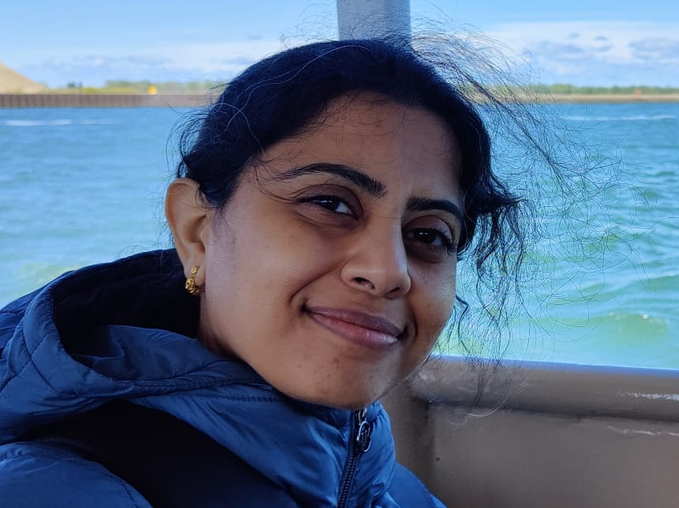

We are a new lab opening at RIT in August 2026. We are actively building our first cohort of researchers — if you're excited about synaptic biology, reach out.

Swetha is a cellular and molecular neuroscientist whose work sits at the intersection of synaptic biology, neuroplasticity, and disease.
She grew up in India, earned her MSc and PhD from the National Brain Research Centre, where she investigated what drives neuronal loss and circuit failure in Huntington's disease and Angelman syndrome. The answer kept pointing her toward the synapse — and eventually to Nick Spitzer's lab at UC San Diego, where she discovered that postsynaptic receptors actively talk back to the presynaptic neuron, stabilizing its transmitter identity through dedicated molecular bridges.
That discovery opened a new set of questions — about disease, about development, about what happens when the conversation breaks down. She firmly believes the best science begins with the courage to say "I don't know," and has followed those questions to Steven Meriney's lab at the University of Pittsburgh, and now to RIT, where she is building a lab around them.
When she's not in the lab, Swetha can be found on a trail, deep in a book, or losing herself in classical dance.
She is a co-PI on an NSF Standard Grant and a Simons Foundation Empire Faculty Fellow.